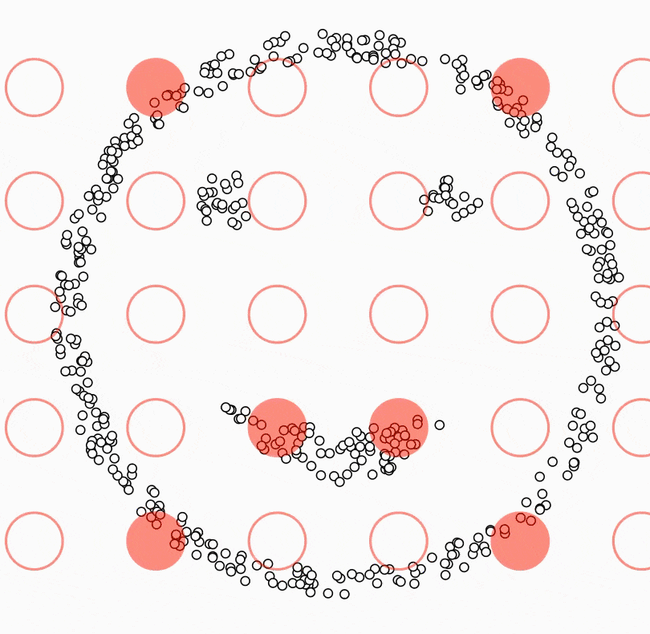

DBSCAN
DBSCAN (Density-Based Spatial Clustering of Applications with Noise) — bu zichlikka asoslangan klasterlash algoritmi. U 1996-yilda Ester va hamkorlari tomonidan taklif qilingan va ayniqsa shakli murakkab bo‘lgan klasterlarni aniqlashda hamda shovqin (noise) nuqtalarni ajratishda samarali hisoblanadi.
Parametrlari
ε (eps) – radius (qo‘shnilik masofasi). Bir nuqtaning atrofidagi hududni belgilaydi.
minPts – minimal qo‘shnilar soni. Klaster hosil qilish uchun kerakli nuqtalar soni.
Nuqtalar turlari
Yadro nuqta (Core point) – agar ε-radius ichida kamida
minPtsqo‘shnisi bo‘lsa.Chekka nuqta (Border point) – ε ichida yadro nuqtaga bog‘langan, lekin qo‘shnilari yetarli bo‘lmagan.
Shovqin (Noise/Outlier) – hech qaysi klasterga kirmagan nuqta.
Ishlash jarayoni
Bitta tasodifiy nuqta tanlanadi.
Uning ε-radiusidagi qo‘shnilari hisoblanadi.
Agar qo‘shnilar soni ≥ minPts → yangi klaster boshlanadi.
Yadro nuqta orqali klaster qo‘shnilarga kengaytiriladi.
Shunday qilib barcha nuqtalar ko‘rib chiqiladi.
Afzalliklari
Oldindan klaster sonini (K) belgilash shart emas.
Murakkab shaklli klasterlarni topa oladi (masalan, egri yoki yoy shaklidagi).
Shovqinlarni alohida ajratib beradi.
Kamchiliklari
ε va minPts tanlash qiyin.
Zichlik juda o‘zgaruvchan datasetlarda yaxshi ishlamasligi mumkin.
Juda katta datasetlarda hisoblash og‘ir.
Python kod: github.com